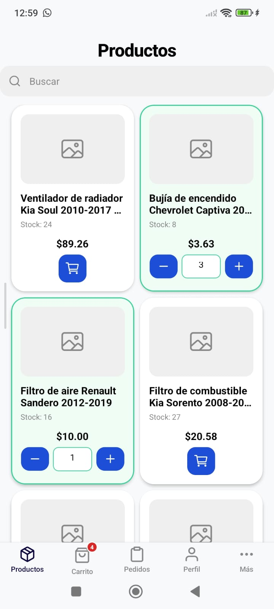
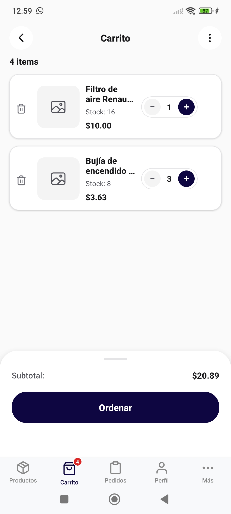
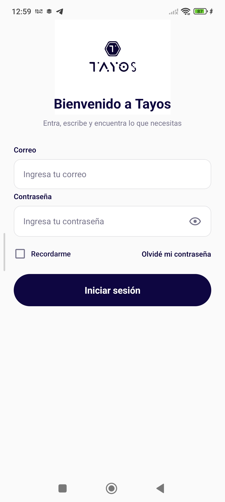

Tayos permite a clientes, distribuidores y proveedores consultar productos, realizar pedidos y dar seguimiento a sus operaciones comerciales directamente desde una aplicación móvil integrada con Odoo.



Consulta repuestos, productos e inventario actualizado desde tu dispositivo móvil.
Realiza compras y solicitudes sin necesidad de llamadas o atención manual.
Sincronización directa con tu operación comercial y procesos empresariales.
Revisa el estado de pedidos y solicitudes en tiempo real.
Usuarios autorizados y controlados desde la plataforma Odoo.
Reduce tiempos de atención y agiliza procesos comerciales.
Tayos se integra con Odoo para aprovechar la información de productos, clientes, inventarios y pedidos ya existentes en tu organización.